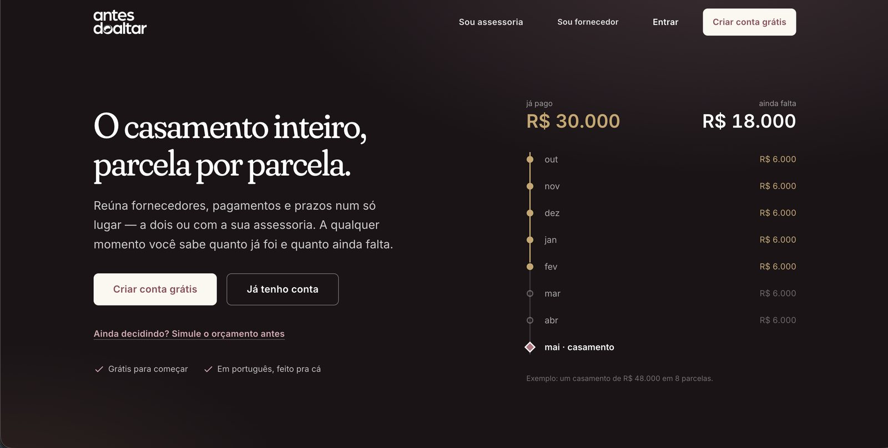

Antes do Altar
antesdoaltar.com.br
- Problema
- O casal (ou a assessoria) precisa organizar o dinheiro do casamento: fornecedores, pagamentos, prazos, lista de presentes, metas de economia e lembretes automáticos, tudo num lugar só.
- Minha contribuição
- Concebi o produto, modelei os dados e construí a aplicação de ponta a ponta — do primeiro commit ao deploy —, com IA integrada ao processo.
- Tecnologias
- Ruby on Rails 7, PostgreSQL e Solid Queue; front-end em React e TypeScript; pagamentos por Stripe e Mercado Pago; e-mails transacionais e monitoramento em produção.